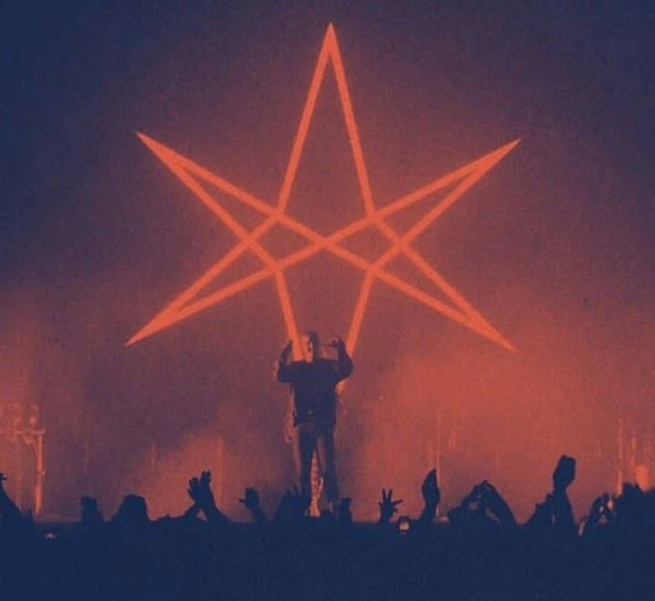
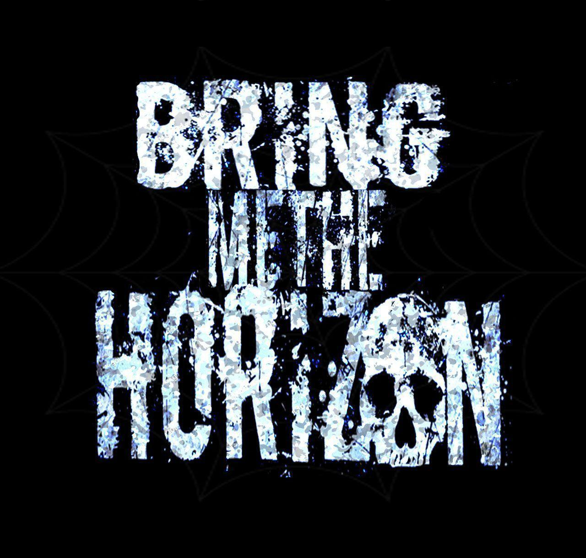

BMTH-
британская рок-группа из Шеффилда, Йоркшира, основанная в 2004 году. В настоящее время состоит из вокалиста Оливера Сайкса, гитариста Ли Малии, басиста Мэтта Кина, барабанщика Мэтта Николлса и клавишника Джордана Фиша. На протяжении карьеры участники старались экспериментировать со звучанием: ранние релизы имели более тяжёлый звук и были классифицированы как дэткор и металкор.

История
Группа была создана в 2004 году участниками распавшихся групп из их района: они получили своё название, взяв за основу фразу из фильма Пираты Карибского моря, которую произнёс капитан Джек Воробей: «Now bring me that horizon». В сентябре 2004 года вышел дебютный релиз группы — мини-альбом «This Is What the Edge of Your Seat Was Made For».Причём, для этого пришлось создать собственный лейбл — Thirty Days of Night Records.